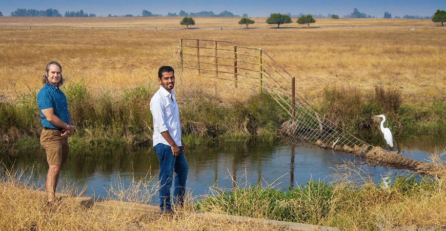
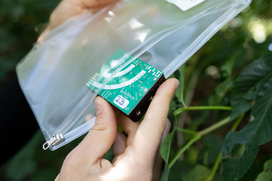

AI is for the Birds in a New Computer Science Project
September 30, 2020
By Leigh Bernacchi, UC Merced
Bird species usually are counted twice a year by wildlife surveyors: once during the breeding season and again during the Christmas Bird Count .
New technology, however, is increasing the accuracy of bird population studies. A team of UC Merced researchers is developing a model to recognize bird calls.
Recording devices called AudioMoths have been placed across bird habitat in Sonoma County. During two-week periods, the device wakes up every 10 minutes and records one minute of sound. Department of Computer Science and Engineering Professor Shawn Newsam and Electrical Engineering and Computer Science graduate student Shrishail “Shree” Baligar are using artificial intelligence (AI) to detect bird calls in the recordings.
Their model can detect 45 different species so far, and will be used to produce maps of where, when, and how many species are present.
Newsam and several colleagues joined up to explore the idea with two recently funded awards.
“I love working on multidisciplinary problems. It charges me,” Newsam said. He and Baligar are working with geography Professor Matthew Clark from Sonoma State University, and Leo Salas, a quantitative ecologist at Point Blue Conservation Science, a nonprofit focused on climate-smart conservation.
“I’m excited to apply AI for the benefit of the Earth,” Newsam said. “Being able to passively detect and map species distributions using low-cost audio recording devices allows a range of down-stream research by domain scientists.”
The tiny AudioMoth recorders will capture recordings in nature, which can later be used to teach a computer model to recognize bird sounds.
The “Soundscapes to Landscapes (S2L): Monitoring Animal Biodiversity from Space Using Citizen Scientists” program is supported by $1.1 million over three years through NASA’s Citizen Science for Earth Systems program. It uses citizen scientists to deploy the AudioMoths. Other birders knowledgeable in bird calls will annotate a subset of the recordings, which serve as the training data for the AI models.
This summer, Newsam also received a $90,000, one-year “AI for Earth Innovation” grant from Global Wildlife Conservation in partnership with Microsoft. The nonprofit relies on research to work with local communities to address the root causes of threats to wildlife.
Newsam’s is one of only five projects funded out of 135 applications. The grant supports AI projects that can scale quickly. The research will benefit many other projects because it is open source.
For Newsam, there are many questions about processing the data, and many technical challenges. The recordings have biophony, geophony and anthrophony noise, and the bird calls are often faint. Some species have different calls for different communications: warning calls, mating calls and others. Which one should the AI focus on?
“Birds often modify their calls by changing frequency, for example, if other birds are also calling,” Newsam said. “I am learning a lot about bird calls.”
Baligar hears the calls as something more than just bird communication.
“I like to think of birds as musical instruments,” he said. “All the violins are orange crowned warblers, but no two violins are the same. A bird song plays different notes, and every bird likes to play a song differently every time.”
Each AudioMoth gathers about 2,000 minutes of data per site. So far, the team has more than 500,000 minute-long recordings — more than 8,000 hours of data from over 600 locations — and terrabytes of data to manage.
However, training the AI model requires a lot of annotated data.
“Deep learning is data hungry,” Baligar said. “The more data the better. On average, we have just 650 training clips per bird species, which is not a lot.”
Newsam, who co-founded the Spatial Analysis Research Center (SpARC) at UC Merced, is an expert in image analysis and understanding.
“Image and audio are sensorily very different but in the end, it is just data — data that we are turning into information through several processes,” he said.
Baligar did not set out to study sound or bird calls when he was a master’s student. He was more interested in time-series questions. Now, audio over time is the focus of his dissertation, and potentially the basis for a company he hopes to launch after graduation.
Computer science and environmental science are two of UC Merced’s growing number of strengths, said Professor Josh Viers, director of the Center for Information Technology Research in the Interest of Society at UC Merced.
“Professor Newsam’s research is indicative of the progress UC Merced has made in attracting top talent and solving important global problems,” Viers said. “Shawn is a leader in developing computer science tools that interpret and integrate massive amounts of information, from Earth imagery to sound recordings, and his research is pushing the envelope on innovation in sustainability and technology. It is really exciting to see this example of artificial intelligence used to benefit wildlife conservation efforts.”
Future work for the team includes trying to identify individual birds and be able to track them over their range.
“If we can overcome some of the modeling challenges,” Newsam said, “we might be able to replace satellites with much more fine-scaled information about all kinds of wildlife.”